块体生成：加密与八叉树
加密（Densify）操作将块体细分为多个块体，使用户能够在特别关注的区域对粗网格进行更精细的离散。
结合基于几何体的筛选（Geometry-based filtering）与加密（Densification），可以生成八叉树网格（Octree meshes）。
网格加密
block densify 命令用于生成简单块体集合并随后加密网格。block densify 命令实际上执行一组 block cut 命令，按输入参数分割块体。因此，新块体会继承父块体的分组，与执行 block cut 命令时相同。同样，与 block cut 一样，块体划分网格后不能再使用 block densify 命令。
block densify 命令首先计算块体在 \(x\)、\(y\) 和 \(z\) 方向的范围，再根据各方向指定的分段数计算切割位置。默认情况下，block densify 假定每个方向分为两段。因此，切面分别位于最小与最大 \(x\) 的中间、最小与最大 \(y\) 的中间，以及最小与最大 \(z\) 的中间。下例展示如何创建和加密楔形块体。原始块体与加密后的块体分别见图 1（Figure 1） 和图 2（Figure 2）。
model new
block create prism face-1 (0 0 0) (4 0 0) (0 0 4) ...
face-2 (0 4 0) (4 4 0) (0 4 4)
block densify

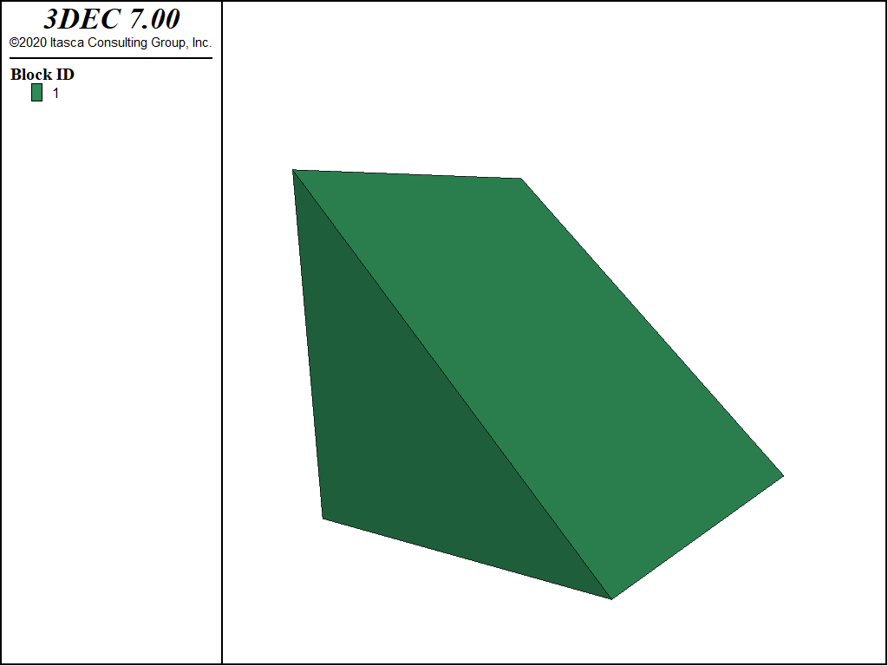
图 1：原始块体。

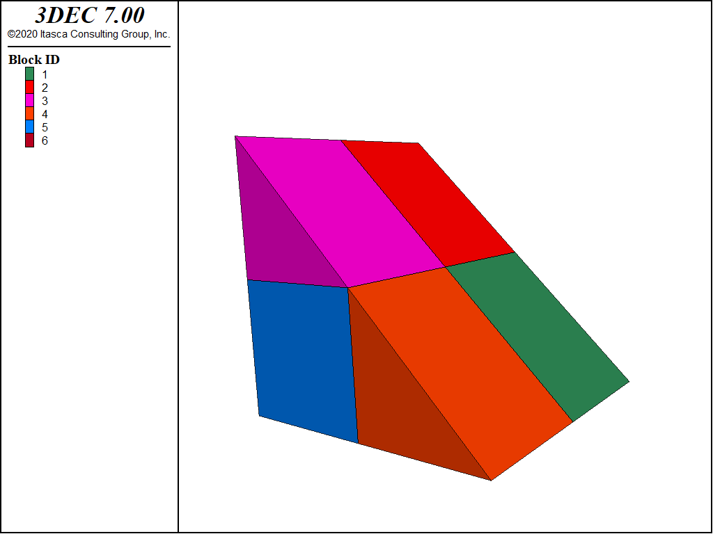
图 2：每个方向划分为两段后的加密块体。
注意
如果全部待加密块体均为六面体，在 block densify 中使用 hex 关键字，可显著加快加密。注意，使用 hex 关键字时，join 关键字不起作用。
各方向的分段数由可选关键字 segment 给出。segment 关键字后跟三个数值，分别表示 \(x\)、\(y\) 和 \(z\) 方向的分段数。如果只给出一个数值，则假定 \(y\) 和 \(z\) 与 \(x\) 相同。在上述示例中，将 block densify 命令替换为 区块加密分段数命令（block densify segments） 3。所得块体见图 3（Figure 3）。

除指定分段数外，还可使用 maximum-length 关键字指定加密网格单元的最大长度。无论使用 maximum-length 还是 segments，3DEC 始终以整数分段数划分块体边来加密网格。下例将边长上限设为 0.15，对 \(z\) 坐标介于 2 与 4 之间的范围进行网格加密。
; 通过指定最大尺寸长度来加密块体
model new
block create brick 0 4 0 4 0 4
block densify segments 4
block densify maximum-length 0.15 hex range position-z 2 4

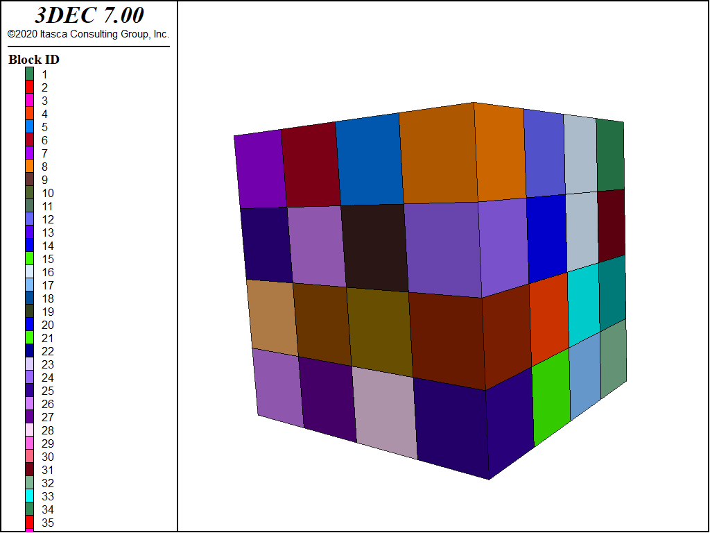
图 4：原始网格。

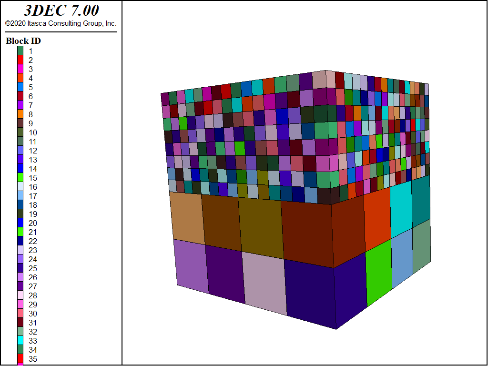
图 5：设置最大长度后加密的模型。
图 5（Figure 5） 表明，加密有时会使小块体与大得多的块体相邻。一般建议相邻块体尺寸不要相差太大，以保持计算精度。可以使用 gradient-limit 关键字解决这一问题。gradient-limit 关键字确保相邻块体的加密级别相差不超过一级。如果在上述示例的 block densify 命令中加入 gradient-limit 关键字，将生成图 5（Figure 5） 所示块体。

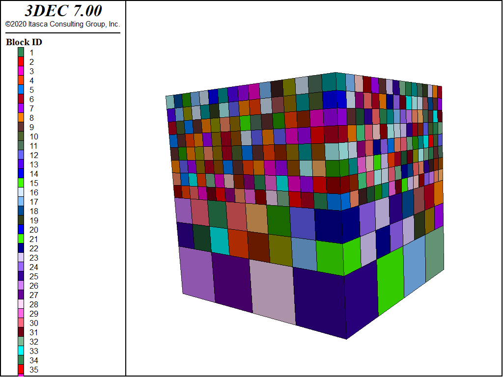
图 6：使用 gradient-limit 关键字加密的模型。
一种特殊情况是待加密块体为四面体（四个面）。从 Griddle 或其他网格生成软件导入的模型，可能主要由四面体构成。采用上述方法加密，可能得到几何形状较差的块体。
图 7（Figure 7） 显示对简单四面体块体执行默认加密的结果，可见生成块体的尺寸相差很大。要创建更好的块体，可在 block densify 命令中添加 tet 关键字。使用该关键字时，不再沿 \(x\)、\(y\) 和 \(z\) 方向切割块体，而是将每个四面体块体分割为八个较小四面体。两种方法生成的块体数量相同，均为八个，但采用 tet 关键字时，块体几何形状明显更好，如图 8（Figure 8） 所示。
model new
block create tetrahedron (0 0 0) (.5 -.5 0) (1 0.5 0) (0.35 0.25 0.5)
block densify tet

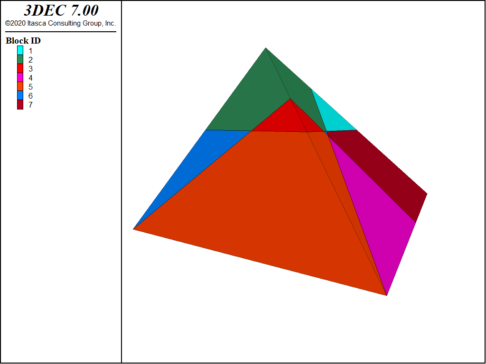
图 7：加密后的四面体块体。

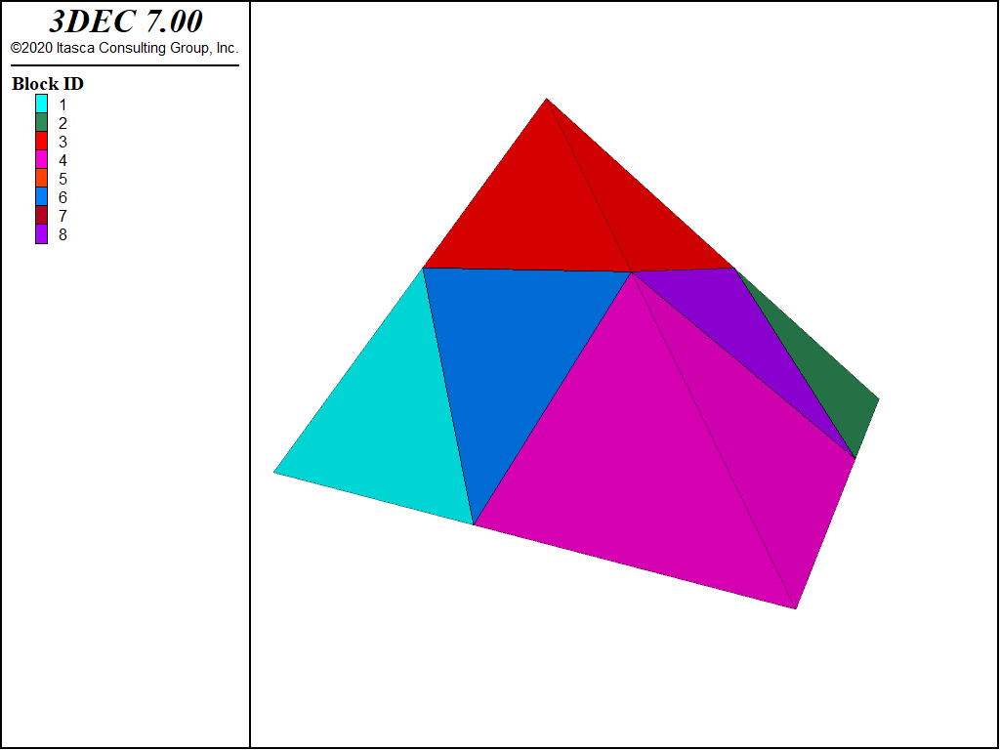
图 8：使用 tet 关键字加密的四面体块体。
可以利用几何集合加密网格。下例介绍对两个几何集合之间的空间进行加密的方法。有关使用几何数据识别模型对象的一般概述和说明，请参阅 i 使用几何数据（Working with Geometric Data）。
本例中，每个几何集合均由两个多边形定义。block densify 命令使用 geometry 范围元素选择块体，条件是从块体质心沿 (0,0,1) 方向发出的射线，与构成 几何集 setA（setA） 或 几何集 setB（setB） 的任一多边形恰好相交一次。详情请参阅 几何空间范围（range geometry-space） 文档。
以下两图分别显示原始网格和加密后的网格。
; 利用几何信息加密模型
model new
block create brick 0 10 0 10 0 10
geometry select 'setA'
geometry polygon create by-position 0 0 1 5 0 1 5 10 1 0 10 1
geometry select 'setA'
geometry polygon create by-position 5 0 1 10 0 5 10 10 5 5 10 1
geometry select 'setB'
geometry polygon create by-position 0 0 5 5 0 5 5 10 5 0 10 5
geometry select 'setB'
geometry polygon create by-position 5 0 5 10 0 10 10 10 10 5 10 5
;
block densify segments 10 join
block densify hex range geometry-space 'setA' set 'setB' count 1
;

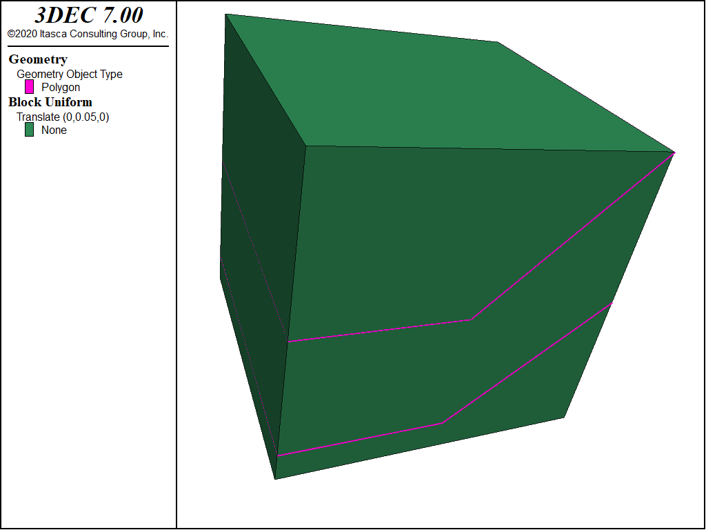
图 9：原始网格。

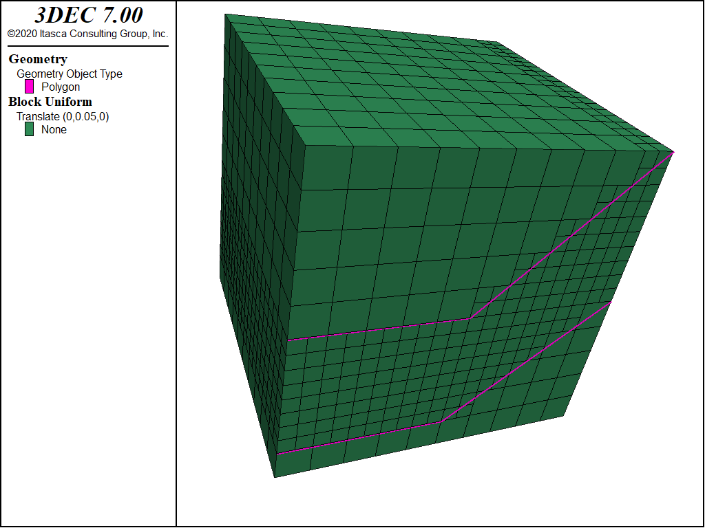
图 10：利用几何数据加密的网格。
基于几何体的加密：八叉树网格生成
当精确贴合表面在物理上并不重要时，常依据几何集合中的几何数据进行网格加密，近似表示极不规则边界处的材料属性变化。矿体和其他类型地质结构通常属于这一类。
block densify 命令可细分按其与几何曲面距离选出的块体。将其与 几何距离范围（range geometry-distance） 范围元素结合，并使用 repeat 关键字，即可用一条命令创建八叉树网格。
例如，命令
block densify maximum-length 50 gradient-limit repeat hex ...
range geometry-distance 'topo' gap 0 extent
可依据与“topo”几何集合的距离，生成八叉树网格。
必须清楚上述各关键字的作用。
- gradient-limit 关键字作用于标记为需要加密的块体。它保证相邻块体之间块体尺寸的最大差别为一个加密级别。
- maximum-length 关键字与 repeat（见下文）结合，表示边长超过 50 的块体将被标记为需要加密。
- repeat 关键字表示先对块体进行一轮加密。随后，如果有块体被加密，则选择一份新的块体列表继续加密。重复这一操作，直到没有块体需要加密，原因可能是它们不在范围内，或已经小于指定的 maximum-length。（注意，如果本例省略
repeat关键字，则加密在单步内完成，且忽略gradient-limit关键字。） - hex 关键字告诉 3DEC，全部待加密块体均为六面体，从而可以使用更快的加密算法。
- 几何距离范围（
range geometry-distance） 选择距 地形几何集 topo（topo） 几何集合不超过 gap 的块体。本例 gap 为零，因此选中的是实际与表面相交的块体。 - extent 关键字表示，应按块体的笛卡尔坐标包围范围而非质心来判断距表面的距离。如果不使用该关键字，则必须采用非零 gap，块体才有机会落入指定范围。
注意，未提供 分段数（segments） 关键字。如果不指定分段数，则假定各方向均为 2，从而每个原始块体生成八个新块体。
然后使用以下命令隐藏地形上方的块体：
block hide range geometry-space 'topo' direction (0,0,-1) count 1
此 范围（range） 将从每个块体质心沿指定方向投射射线，并统计其与几何曲面的交点数。如果计数为 1，则选择该块体并隐藏。这些命令的结果如下所示。

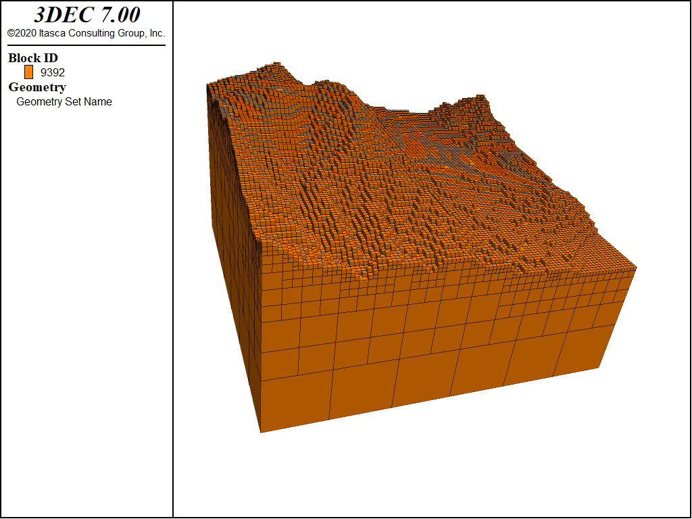
图 11：使用 block densify 生成的八叉树网格。
由于块体之间的节理并不表示真实节理或断层，在这次加密之后执行 block join 命令可能更合适。
为给出更实际的示例，以下数据文件以简单矩形网格为起点，为复杂矿体创建八叉树网格。
model new
block create brick 25000 35000 20000 35000 0 10000
block densify segments 10 15 10 hex
geometry import 'orebody.stl'
block densify gradient-limit maximum-length 50 repeat hex ...
range geometry-distance 'orebody' gap 0.0 extent
block group 'orebody' range geometry-space 'orebody' count odd
操作结果见下图。最后一条 block group 命令使用 几何空间范围（range geometry-space） 范围元素，选择位于几何曲面“内部”的块体。如果 geometry-space 范围未给出 direction，则默认方向朝上，即 (0,0,1)。

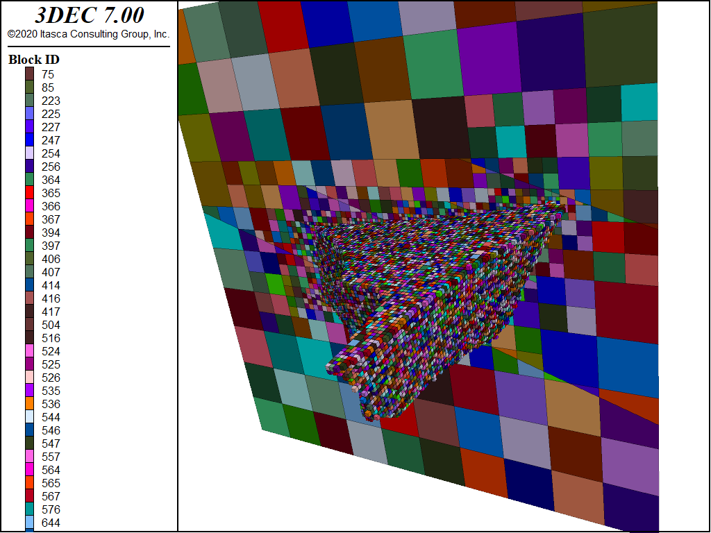
图 12：使用 block densify 生成的八叉树网格。
| 这些内容对您有帮助吗？… 版权与免责声明 | FLAC3D © 2019, Itasca | 原文更新于 2020 年 10 月 8 日 |